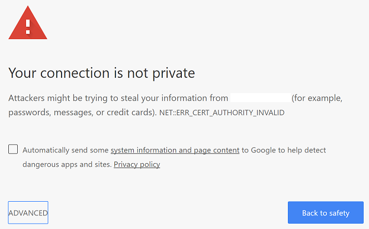

I have been using AWS for Kaggle and for problems of my personal interests. The AWS spot instances are convenient and affordable for individuals in most situations except for deep learning. The costs easily ramp up to $1.00 per hour when I ran a g2.2xlarge instance set up with the deep learning AMI and with sufficient storage. In this case, Paperspace is a good and affordable alternative to AWS.
Just like AWS, paperspace provides access to persistent cloud-based virtual machines, but at a much affordable prices. For machine learning applications, I can choose from two options at the time this post was written. The GPU+ option charges $0.4 per hour along with $5.00 for 50GB per month for the storage, and it comes with 8 CPUs, 30GB RAM, and a 8GB Quadro M4000 GPU. This is fairly sufficient for my purpose. Following this detailed tutorial, we can easily set up a virtual machine with Ubuntu and major deep learning packages installed.
By default, we can access both the desktop and the terminal of our virtual machine on our browser. This works very well. I feel no difference for using Jupyter Notebook in a virtual desktop within the browser on a 24' monitor. However, the font size and mouse response lag become a challenge on my Lenovo X1 Yoga. I think I still need a Jupyter Notebook server for the advantages of my eyes, and it turns to be contents in this post.
You first need to assign a public IP to your virtual paperspace machine, then set up the Jupyter Notebook server as you are in AWS, and allow connections to your port in order to access your server in the browser.
For those who are not very familiar with all these process, you can follow my brief tutorial as follows.
Assign Public IP
In your paperspace console, the Public IP can be assigned at This is the IP you can connect to your virtual machine through ssh and browser.
Setting Jupyter Notebook Server
We can set up the server following the official doc of jupyter notebook as follows:
Open a terminal in your console as shown in the following plot. you will be asked for the password to log in, which has been sent to your registered email. If you don't have one already, generate a default notebook configuration file ~/.jupyter/jupyter_notebook_config.py.
:~$ jupyter notebook --generate-config
Before modifying the notebook configuration, we need to generate a hashed password. As of notebook version 5.0, we can enter and store a password with a one-line command as follows.
:~$ jupyter notebook password
Enter password:
Verify password:
[NotebookPasswordApp] Wrote hashed password to /home/paperspace/.jupyter/jupyter_notebook_config.json
Create a directory, and generate a self-signed certificate
:~$ mkdir cert
:~$ cd cert
:~/cert$ openssl req -x509 -nodes -days 365 -newkey rsa:1024 -keyout mykey.key -out mycert.pem
We need to set up the paths of our certificate files and the hashed password in the notebook configuration file. We can use Vi in a terminal or use whatever editor we like in the in-browser desktop to open the file ~/.jupyter/jupyter_notebook_config.py. We are going to add following settings to the beginning of the file.
# Set options for certfile, ip, password, and toggle off
# browser auto-opening
c.NotebookApp.certfile = u'/absolute/path/to/your/certificate/mycert.pem'
c.NotebookApp.keyfile = u'/absolute/path/to/your/certificate/mykey.key'
# Set ip to '*' to bind on all interfaces (ips) for the public server
c.NotebookApp.ip = '*'
c.NotebookApp.password = u'your hashed password in the .json file in this folder'
c.NotebookApp.open_browser = False
# It is a good idea to set a known, fixed port for server access
c.NotebookApp.port = [your choice of port number, e.g. 9999]
Save the file and exit from the editor. The notebook server is ready to run.
Allow UFW port access
In order to access notebook server from our browser, we have to set UFW to allow us accessing the port of the notebook server. This can be done with the following command.
sudo ufw allow [your notebook server port]
We will re-enter our linux password at here.
All set! Now use this address to access your server.
https://[your public IP]:[your port]
If it is your first time seeing the following page, click 'ADVANCED' then 'Processd to ....', type in your password for the notebook server. Enjoy! 